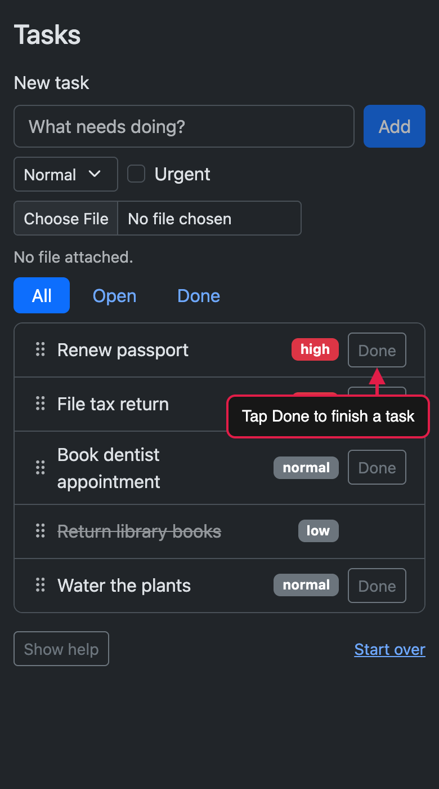

Polished demo videos and screenshots of anything that runs in a browser, from reusable R scripts.
![A demo of a task tracker. The view zooms in on the new-task form, a cursor clicks the title field and types Prepare release notes, then clicks Add. The view pulls back as the task appears at the top of the list, outlined in red, with the caption New tasks go to the top of the list. Under the caption Drag to reorder, the cursor drags the new task down the list and drops it just below the two high-priority tasks. Under the caption Check it off when you're done, the cursor clicks the task's Done button and the task is crossed out.](images/readme-hero-1.gif)
paparazzi opens a page in headless Chrome and works through your R script one step at a time: click this button, type into that field, move the camera to the form, show a caption. While it records, paparazzi moves the cursor and types text at the pace a person would, then saves the video as an MP4, WebM, or GIF.
Your script is the source of the demo, so when your app or document changes you can run it again to get the same demo of the new version. paparazzi works with any page Chrome can open, including Shiny apps, Quarto documents and slides, pkgdown sites, and live websites.
paparazzi does more than record. You can use the same functions and syntax to take product screenshots with framing and annotations, or to write front-end tests in testthat. In a test, paparazzi waits for each action’s target and retries each expectation until the page catches up.
Installation
You can install the development version of paparazzi from GitHub:
# install.packages("pak")
pak::pak("posit-dev/paparazzi")Additional requirements
paparazzi controls Chrome (or another Chromium-based browser) through chromote, so you’ll need one installed. If chromote can’t find it, see ?chromote::find_chrome.
paparazzi routes each recording to the encoder that suits it best: MP4 and WebM videos go to the av package, GIFs to gifski. Both are suggested dependencies, and paparazzi checks for them only when a recording needs them. Simple GIFs need only gifski, but two features call in extra packages: cropping a GIF to a framed region of the page needs png, and camera movement or burned-in captions need av to composite the frames.
The code that made the video
Here’s the whole script for the video at the top of this page, running on a small task-tracker page that ships with paparazzi:
library(paparazzi)
page <- pz_open(
pz_example("tasks"),
width = 1000,
height = 720,
color_scheme = "light"
)
task_release <- pz_loc(".task", has_text = "Prepare release notes")
task_dentist <- pz_loc(".task", has_text = "Book dentist appointment")
page |>
pz_stage(enter = "bottom", pause = 0.3) |>
pz_stage_annotate(caption_side = "top") |>
pz_record_start(
frame = pz_frame(list("h1", ".task-list"), pad = 24, ratio = 16 / 9),
format = "gif",
scale = 800
) |>
pz_annotate_caption("Add a task") |>
pz_camera("#new-task", wait = TRUE) |>
pz_act_type("Prepare release notes", target = "#task-title") |>
pz_act_click("#add-task") |>
pz_expect_visible(task_release) |>
pz_annotate(task_release, type = "box", pad = 4, id = "new") |>
pz_annotate_caption("New tasks go to the top of the list") |>
pz_record_hold(1.2) |>
pz_camera_reset() |>
pz_annotate_clear(id = "new") |>
pz_annotate_caption("Drag to reorder") |>
pz_act_drag(
pz_loc(".task-drag-handle", within = task_release),
to = pz_loc(".task-drag-handle", within = task_dentist)
) |>
pz_record_hold(1) |>
pz_annotate_caption("Check it off when you're done") |>
pz_find(task_release) |>
pz_act_click(".task-done") |>
pz_expect_class("done") |>
pz_cursor_leave() |>
pz_record_hold(1)
pz_close(page)pz_open() opens the page at the size you want to record. At the top of the pipeline, pz_stage() sets how the recording looks: the cursor enters from the bottom, and each step pauses for a moment so viewers can follow. pz_stage_annotate() puts captions at the top.
pz_record_start() starts the recording, and pz_close() stops it and writes the file. The frame is the part of the page the video shows: the task card, from its heading to the bottom of the list, padded and widened to 16:9. format and scale make the result an 800-pixel-wide GIF, small enough for a README.
Between those two calls, each line is one step, and the steps fall into three groups:
-
Acting on the page.
pz_act_type()clicks the title field and types into it,pz_act_click()presses a button, andpz_act_drag()moves the new task to a new place in the list.Several steps work with the same two tasks, so before the pipeline, you describe them once with
pz_loc():task_releaseis the task you’re about to add, andtask_dentistis the one you’ll drag it below. paparazzi doesn’t look for apz_loc()element until a step uses it, and it looks again each time, so you can describe the new task before it exists. Later,pz_find()narrows the next steps to the new task, so".task-done"means that task’s Done button. Directing the recording.
pz_camera()zooms in on the form andpz_camera_reset()pulls back out.pz_annotate()outlines the new task,pz_annotate_clear()removes the outline, andpz_annotate_caption()changes the caption.pz_record_hold()gives viewers a moment to read, andpz_cursor_leave()moves the cursor out of the shot at the end.Waiting for the page.
pz_expect_visible()waits for the page to show the new task beforepz_annotate()outlines it, andpz_expect_class()waits for the page to mark the task done. Waits like these keep your scripted demo in step with the real page. paparazzi keeps recording while it waits, so if a step takes longer than you’d like viewers to watch, you can cut it out withpz_record_pause()andpz_record_resume().
Features
Additional features
The demo above covers the basics: acting on the page, moving the camera, annotating, and captioning. paparazzi can also:
-
Draw attention to what matters. Callouts with arrows (
pz_annotate_callout()) and spotlights that dim everything else (pz_annotate_spotlight()) lead your viewer’s eye to the part of the page you’re talking about. In a recording, paparazzi animates annotations in and keeps them on their elements as the page scrolls or changes. -
Set defaults once. The staging functions set defaults for the whole page, so you don’t repeat the same arguments in every step.
pz_stage()sets the cursor’s speed and size, the typing speed, and the pause after each step,pz_stage_annotate()sets how annotations look, andpz_stage_frame()sets the default framing. -
Control what’s in the shot. With
pz_frame(), you choose exactly what a video or screenshot shows: crop to one or more elements, add padding, and set an aspect ratio, like 16:9 for slides or 9:16 for a vertical video. -
Show keyboard shortcuts. When you press keys with
pz_act_press(), paparazzi can show them in the recording as on-screen keycaps. - Write subtitles. For MP4 and WebM videos, paparazzi can write your captions to a WebVTT subtitle file, instead of or as well as burning them into the video.
-
Use your own fonts.
pz_stage_fonts()loads fonts from Google Fonts, Bunny Fonts, or a file for captions, callouts, and badges. -
Hide private data. Cover sensitive text with
pz_annotate_redact()before you start recording, and it stays hidden from the very first frame. -
Set up the browser the way you want it.
pz_device()gives you one place to configure the browser: screen size, phone emulation, dark mode, zoom, reduced motion, locale, and time zone.
Screenshots
You can use the same annotations, framing, and devices in screenshots. Here’s the task tracker on a phone in dark mode, with a callout:
|
 |
R Markdown and Quarto
You can also run paparazzi right inside an R Markdown or Quarto document. Put your script in a code chunk, leave out the file path, and end the chunk with pz_screenshot() or with the call that ends a recording, like pz_record() or pz_record_stop(). paparazzi saves the image or video with the document’s other figures and shows it right where the chunk is. When your app or document changes, render again and paparazzi takes fresh screenshots and records new videos.
Shiny apps
Give pz_open() the path to a Shiny app, and paparazzi runs the app in a background R process, opens it, and waits until it’s ready. When you close the page, paparazzi stops the app. In between, you use the same functions you would on any other page:
app <- pz_open(pz_example("tasks-app"))
app |>
pz_set_shiny_input("priority", "high") |>
pz_set_value("Buy milk", target = "#title") |>
pz_act_click("#add") |>
pz_expect_text("3 tasks", target = "#summary")
pz_close(app)The one Shiny-specific function in that example is pz_set_shiny_input(). It sets an input the way Shiny sees it, so even selectize inputs and sliders update on the page and the server responds. Everything else works just as it does on any other page, so you can record a demo of your app, take screenshots, or write browser tests with what you already know.
Browser tests
You can write browser tests with the same functions you use to record a demo. paparazzi animates the cursor and typing only while it records, so outside a recording your steps run at full speed.
Browser tests are tricky because the page keeps changing as you use it. When you click a button, the page might fetch data, re-render a list, or start an animation, and you rarely know how long that will take. If your test checks too early, it fails for no reason; if it sleeps for a fixed time, it’s slow and probably still flaky.
paparazzi handles the waiting for you. You state what should happen, and paparazzi waits until it does or stops if it doesn’t. Before pz_act_click() clicks on an element, paparazzi waits for that element to be ready. An expectation like pz_expect_text() retries until the page shows what you expect, or times out with an error that says what it last saw.
paparazzi also works inside testthat, with the same syntax. testthat counts each paparazzi expectation as a test expectation, and pz_local_page() closes the page, and stops its app, when the test ends:
test_that("adding a task updates the summary", {
page <- pz_local_page(pz_example("tasks-app"))
page |>
pz_set_value("Buy milk", target = "#title") |>
pz_act_click("#add") |>
pz_expect_text("3 tasks", target = "#summary")
})If you’re testing a Shiny app, you might also consider shinytest2. Pick the tool by what you want to check:
- shinytest2 focuses on Shiny apps and snapshot testing. It reads input, output, and exported values straight from Shiny, and compares them, or screenshots of the app, against snapshots you save with the app.
- paparazzi tests the front end of any page Chrome can open: Shiny apps, Quarto documents and websites, pkgdown sites, htmlwidgets, or a live website. You type and click the way a person would, then check that specific text, values, classes, or attributes show up on the page.
Learn more
- Get started builds a demo video one step at a time, from opening a page to framing the finished recording.
- Make a three-part app walkthrough records a series of short videos with camera moves, callouts, captions, and redactions.
- Annotate pages tours every kind of mark, callout, spotlight, redaction, and caption.
- Shiny apps covers starting apps, waiting for the server, setting inputs, and testing.
- The function reference lists every function by task.